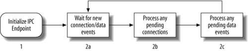
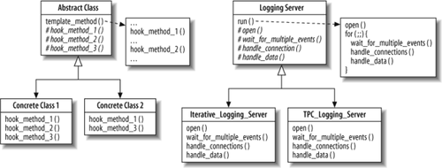
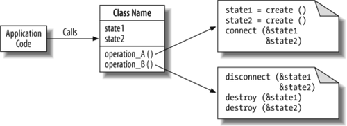
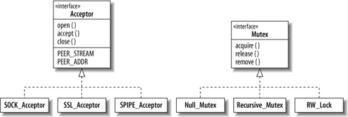

26.2. Object-Oriented Design of the Logging Server Framework
Before we discuss the OO design of our logging server, it is important to understand several key concepts about OO frameworks. Most programmers are familiar with the concept of a class library, which is a set of reusable classes that provides functionality that may be used when developing OO programs. OO frameworks extend the benefits of OO class libraries in the following ways: [**]
[**] "Frameworks = Patterns + Components," Ralph Johnson, Communications of the ACM, Vol. 40, No. 10, October 1997.
They define "semi-complete" applications that embody domain-specific object structures and functionality
-
Classes in a framework work together to provide a generic architectural skeleton for applications in a particular domain, such as graphical user interfaces, avionics mission computing, or networked logging services. Complete applications can be composed by inheriting from and/or instantiating framework components. In contrast, class libraries are less domain-specific and provide a smaller scope of reuse. For instance, class library components such as classes for strings, complex numbers, arrays, and bitsets are relatively low-level and ubiquitous across many application domains.
Frameworks are active and exhibit "inversion of control" at runtime
-
Class libraries are typically passive—i.e., they perform isolated bits of processing when invoked by threads of control from self-directed application objects. In contrast, frameworks are active—i.e., they direct the flow of control within an application via event-dispatching patterns, such as Reactor [
 ] and Observer. [
] and Observer. [ ] The "inversion of control" in the runtime architecture of a framework is often referred to as "The Hollywood Principle," which states "Don't call us, we'll call you." [§§]
] The "inversion of control" in the runtime architecture of a framework is often referred to as "The Hollywood Principle," which states "Don't call us, we'll call you." [§§][
] Schmidt et al., op. cit.[
] Gamma et al., op. cit.[§§] "Pattern Hatching - Protection, Part I: The Hollywood Principle," John Vlissides, C++ Report, February 1996.
Frameworks are typically designed by analyzing various potential problems that the framework might address and identifying which parts of each solution are the same and which areas of each solution are unique. This design method is called commonality/variability analysis, [||||]which covers the following topics:
[||||] "Commonality and Variability in Software Engineering." J. Coplien, D. Hoffman, and D. Weiss, IEEE Software, Vol. 15, No. 6, November/December 1998.
Scope
-
Defines the domains (i.e., the problem areas a framework addresses) and the context of the framework.
Commonalities
-
Describe the attributes that recur across all members of the family of products based on the framework.
Variabilities
-
Describe the attributes unique to the different members of the family of products.
26.2.1. Understanding the Commonalities
The first step in designing our logging server framework is therefore to understand the parts of the system that should be implemented by the framework (commonalities) and the parts of the system left to be specialized in subclasses or parameters (variabilities). This analysis is straightforward because the steps involved in processing a log record sent over a network can be decomposed into the steps shown in Figure 26-3, which are common to all logging server implementations.
During this stage of the design process, we define each step as abstractly as possible. For example, at this stage we've made minimal assumptions about the type of IPC mechanisms, other than they are connection-oriented to ensure reliable delivery of log records. Likewise, we've avoided specifying the type of concurrency strategy (e.g., whether the server can handle multiple requests, and if so, how they are dispatched) or the synchronization mechanism used by each step. The actual choice of specific behavior for a step is thus deferred to the subsequent concrete implementations that provide a particular variant for each step.
Figure 26-3. Logging server main loop
The Template Method pattern is a useful way to define abstract steps and defer implementation of their specific behaviors to later steps in the design process. This pattern defines a base class that implements the common—but abstract—steps in the template method in terms of hook methods that can be overridden selectively by concrete implementations. Programming language features, such as pure virtual functions in C++ or abstract methods in Java, can be used to ensure that all concrete implementations define the hook methods. Figure 26-4 shows the structure of the Template Method pattern and demonstrates how this pattern is applied to the design of our OO logging server framework.
Figure 26-4. Template Method pattern and its application to the logging server
26.2.2. Accommodating Variation
Although the Template Method pattern addresses the overall design of the steps in our logging server framework, we're left with the question of how to accommodate all three dimensions of variability defined earlier (IPC, concurrency, and synchronization mechanisms) needed to support our design. One approach would simply use the Template Method pattern and implement one IPC/concurrency/synchronization combination per concrete subclass. Unfortunately, this approach would yield exponential growth in the number of concrete subclasses, as each addition to any dimension could generate another implementation for each possible combination of the other dimensions. A pure Template Method design, therefore, would not be substantially better than handcrafting one-off implementations of a logging server for each variant.
A more effective and scalable design could leverage the fact that our variability dimensions are largely independent. The choice of a different IPC mechanism, for instance, is unlikely to require changes in the concurrency or synchronization mechanisms used. Moreover, there is a high-level commonality in how different types of IPC and synchronization mechanisms function—e.g., IPC mechanisms can initiate/accept connections and send/receive data on connections, whereas synchronization mechanisms have operations to acquire and release locks. The design challenge is to encapsulate the accidental complexities in these APIs so that they can be used interchangeably.
A solution to this challenge is to use the Wrapper Facade pattern, which presents a single unified OO interface for the underlying non-OO IPC and synchronization mechanisms provided by system functions in an OS. Wrapper facades are particularly useful for enhancing portability by hiding accidental complexities between mechanisms, as well as making it less tedious and error-prone to work with these APIs. For instance, a wrapper facade can define a higher-level type system that ensures that only correct operations are called on the underlying non-OO (and less type-safe) OS IPC and synchronization data structures. The role of a wrapper facade is shown in Figure 26-5.
Figure 26-5. Wrapper facade design pattern
ACE is a widely used example of host infrastructure middleware that defines unified OO interfaces using wrapper facades for both IPC and synchronization mechanisms. We base the wrapper facades in this chapter on simplified versions of those provided by ACE. Figure 26-6 shows some of the ACE wrapper facades.
Figure 26-6. Some ACE wrapper facades for passive connection establishment and synchronization
The Acceptor wrapper facade provides the means to create passive-mode connections and provides "traits" to represent aspects of a mechanism that work essentially the same way across different implementations, just with different APIs. For instance, PEER_STREAM and PEER_ADDR designate dependent wrapper facades appropriate for sending/receiving data and for addressing by the IPC mechanism, respectively. SOCK_Acceptor is a subclass of Acceptor used in this chapter to implement a factory for passively establishing connections implemented using the socket API.
The Mutex wrapper facade provides an interface whose methods acquire and release locks, including a Recursive_Mutex implemented using a mutex that will not deadlock when acquired multiple times by the same thread, a RW_Lock that implements readers/writer semantics, and a Null_Mutex whose acquire( )/release( ) methods are inline no-ops. The last class mentioned is an example of the Null Object pattern [##]and is useful for eliminating synchronization without changing application code. Figure 26-6 makes it appear as if each family of classes is related by inheritance, but they are actually implemented by classes unrelated by inheritance that have a common interface and can be used as type parameters to C++ templates. We made this design choice to avoid virtual method call overhead.
[##] "The Null Object Pattern," Bobby Woolf, in Pattern Languages of Program Design, Volume 3, Robert C. Martin, Dirk Riehle, and Frank Buschmann, Addison-Wesley, 1997.
26.2.3. Tying It All Together
Another design challenge is how to associate a concurrency strategy with an IPC and synchronization mechanism. One approach would be to use the Strategy pattern, [***]which encapsulates algorithms as objects so they can be swapped at runtime. This approach would provide the Logging_Server with a pointer to abstract base classes of Acceptor and Mutex, and then rely on dynamic binding and polymorphism to dispatch the virtual methods to the appropriate subclass instances.
[***] Gamma et al., op. cit.
While a Strategy-based approach is feasible, it is not ideal. Each incoming log record may generate several calls to methods in the Acceptor and Mutex wrapper facades. Performance could therefore degrade, because virtual methods incur more overhead than nonvirtual method calls. Given that dynamically swapping IPC or synchronization mechanisms are not a requirement for our logging servers, a more efficient solution is to use C++ parameterized types to instantiate our logging server classes with the wrapper facades for IPC and synchronization.
We therefore define the following generic abstract base class called Logging_Server from which all logging servers in this chapter will inherit:
template <typename ACCEPTOR, typename MUTEX>
class Logging_Server {
public:
typedef Log_Handler<typename ACCEPTOR::PEER_STREAM> HANDLER;
Logging_Server (int argc, const char *argv);
// Template method that runs each step in the main event loop.
virtual void run (void);
protected:
// Hook methods that enable each step to be varied.
virtual void open (void);
virtual void wait_for_multiple_events (void) = 0;
virtual void handle_connections (void) = 0;
virtual void handle_data
(typename ACCEPTOR::PEER_STREAM *stream = 0) = 0;
// Increment the request count, protected by the mutex.
virtual void count_request (size_t number = 1);
// Instance of template parameter that accepts connections.
ACCEPTOR acceptor_;
// Keeps a count of the number of log records received.
size_t request_count_;
// Instance of template parameter that serializes access to
// the request_count_.
MUTEX mutex_;
// Address that the server will listen on for connections.
std:string server_address_;
};
Most methods in Logging_Server are pure virtual, which ensures that subclasses implement them. The open( ) and count_request( ) methods that follow, however, are reused by all logging servers in this chapter:
template <typename ACCEPTOR, typename MUTEX>
Logging_Server<ACCEPTOR, MUTEX>::Logging_Server
(int argc, char *argv[]): request_count_ (0) {
// Parse the argv arguments and store the server address_...
}
template <typename ACCEPTOR, typename MUTEX> void
Logging_Server<ACCEPTOR, MUTEX>::open (void) {
return acceptor_.open (server_address_);
}
template <typename ACCEPTOR, typename MUTEX> void
Logging_Server<ACCEPTOR, MUTEX>::count_request (size_t number) {
mutex_.acquire (); request_count_ += number; mutex_.release ();
}
The Log_Handler class is responsible for demarshaling a log record from a connected data stream whose IPC mechanism is designated by the ACCEPTOR type parameter. The implementation of this class is outside the scope of this chapter, and could itself be another dimension of variability—that is, logging servers might want to support different log message formats. If we were to support varying the format of method of storing incoming log messages, this class could be yet another template parameter in our logging framework. For our purposes, it is sufficient to know that it is parameterized by the IPC mechanism and provides two methods: peer( ), which returns a reference to the data stream, and log_record( ), which reads a single log record from the stream.
The primary entry point into Logging_Server is the template method called run( ), which implements the steps outlined in Figure 26-3, delegating the specific steps to the hook methods declared in the protected section of Logging_Server, as shown in the following code fragment:
template <typename ACCEPTOR, typename MUTEX> void
Logging_Server<ACCEPTOR, MUTEX>::run (void) {
try {
// Step 1: initialize an IPC factory endpoint to listen for
// new connections on the server address.
open ();
// Step 2: Go into an event loop
for (;;) {
// Step 2a: wait for new connections or log records
// to arrive.
wait_for_multiple_events ();
// Step 2b: accept a new connection (if available)
handle_connections ();
// Step 2c: process received log record (if available)
handle_data ();
}
} catch (...) { /* ... Handle the exception ... */ }
}
The beauty of this code is that:
-
Its pattern-based design makes it easy to handle variation in concurrency models, such as by varying the behavior of the run( ) template method by providing specific implementations of the hook methods in the implementation of subclasses.
-
Its template-based design makes it easy to handle variation in IPC and synchronization mechanisms, such as by plugging different types into the ACCEPTOR and MUTEX template parameters.